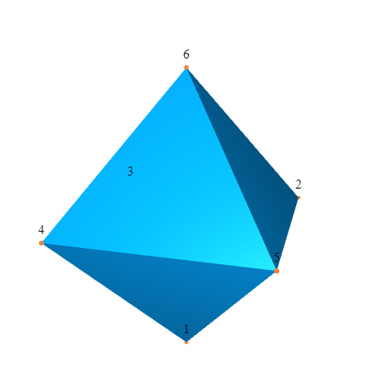
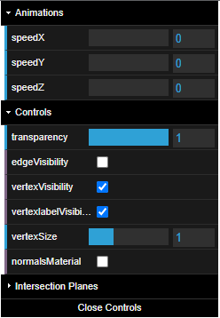
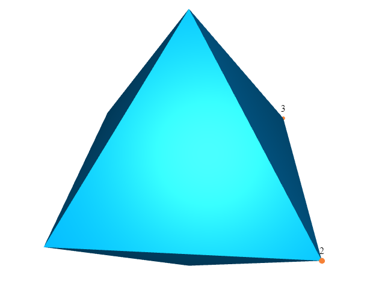
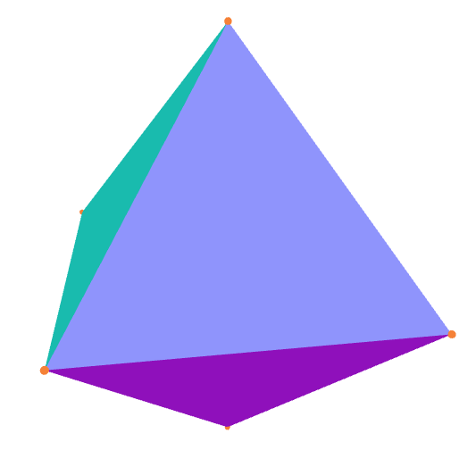
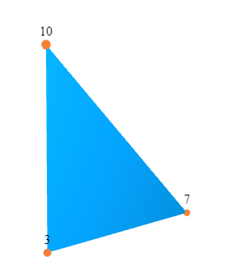
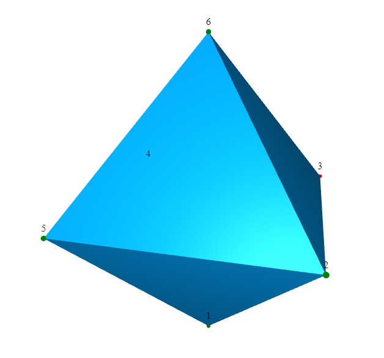
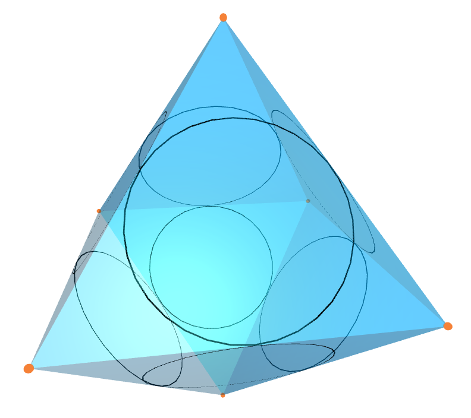
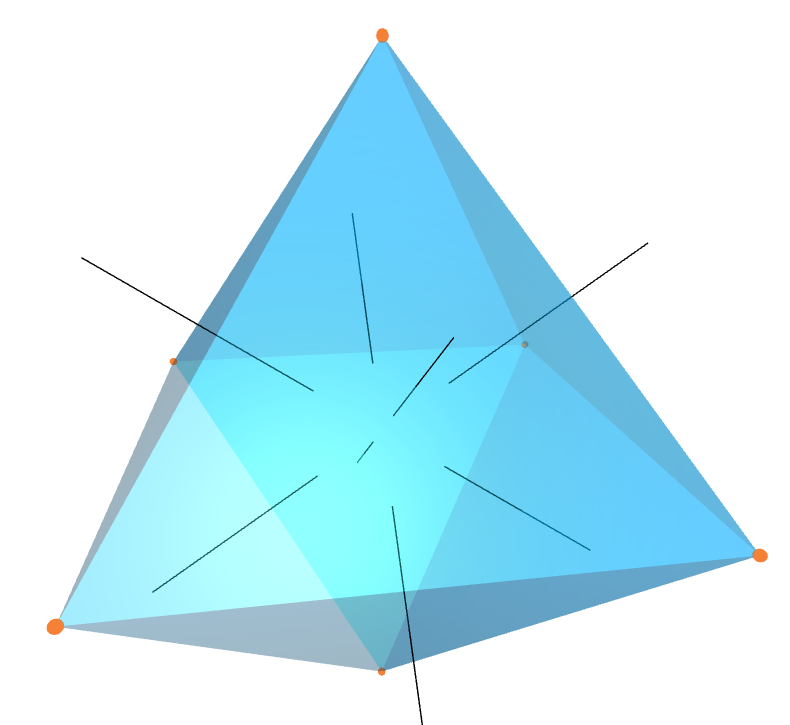
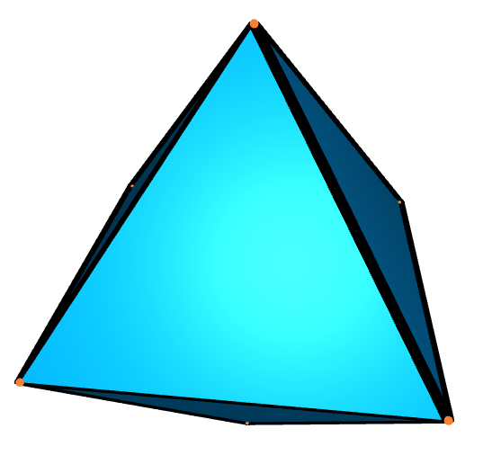

This chapter describes animating simplicial surfaces via Javascript using three.js, see https://threejs.org/. Currently this uses r148.
This section contains a minimal example by animating an octahedron. To construct an octahedron, we need to specify the 3D-coordinates of its vertices. With this, we can already generate an animation.
gap> oct := Octahedron();; gap> verticesPositions := [ > [ 0, 0, Sqrt(2.) ], > [ 1, 1, 0 ], > [ 1, -1, 0 ], > [ -1, -1, 0 ], > [ -1, 1, 0 ], > [ 0, 0, -Sqrt(2.) ] ];; gap> printRecord := SetVertexCoordinates3D(oct, verticesPositions, rec());; gap> DrawComplexToJavaScript(oct, "octahedron.html", printRecord);;
Now, your working directory should contain a file "octahedron.html". This is what it should look like if opened with your browser of choice:

The methodDrawComplexToJavaScript (Section 2.3) generates this .html file. It does this using a configuration saved in a so called printRecord. This printRecord containes at least the 3D-coordinates (as lists with three float entries) of the vertices. Based on these 3D-coordinates of the vertices, the complex is placed in the animation. Therefore, a typical workflow to animate a complex would look like this:
Construct the complex as triangular complex object from the SimplicialSurfaces package.
Set the location of the vertices
(Optional) Configure more parameters as described in 2.4 and following
Generate the animation as an .html file.
This file can be opened with most modern browsers and the surface will be shown as a 3D render with some options. More on them in 2.2.
Because we load the three.js dependencies (and three.js itself) from a content delivery network (CDN) the animation requires an active internet connection. (Some browsers will cache these files so it might work offline but this is not guaranteed)
The files generated by DrawComplexToJavaScript have some options that can be changed live in the .html file. These are in the so called graphical user interface (GUI), which will look similar to the following

It includes options for the following:Speed of rotation in the X, Y and Z direction
Transparency of the faces that are enabled
Visibility of the edges that are enabled. More in 2.2-4
Visibility of the vertices that are enabled
Visibility of the names (labels) of the vertices that are enabled
Changing the size of the visible vertices (displayed as spheres)
Changing to normalsMaterial. More in 2.2-11
Visibility of the inner circles. More in 2.5
Width of the inner circles.
Visibility of the normals of inner circles. More in 2.6
(Optional) Any parameters used in the coordinates. More in 2.7
Enabling and moving intersection planes. More in 2.2-1
This GUI is implemented using the dat.GUI package from three.js.
In the GUI there is the option for so called intersection planes. These are three axis aligned planes, that intersect the complete animation and only show one of the sides.
This allows to look inside the animation and can be very helpful for example if there are self-intersections or a complex gets fairly big.
To activate a plane, toggle the respective checkbox in the GUI. Directly underneath, there is a slider to adjust where the plane should intersect the animation.
If the vertex coordinates are not parameterised (2.7) the sliders are automatically adjusted so you can intersect the whole complex in X, Y and Z direction. In case you want more precision, either make the GUI larger by dragging on the left of the GUI or change the slider by typing a number in the field next to it.
If there are coordinates which are parameterized or you want to change the range of the planes manually, it is possible with the following:
‣ SetPlaneRange( surface, ranges, printRecord ) | ( operation ) |
Returns: the updated print record
Change the range of the intersection planes by giving a list of the ranges as floats in the following format: [[minX, maxX],[minY, maxY],[minZ, maxZ]]
‣ GetPlaneRange( surface, printRecord ) | ( operation ) |
Returns: a list of lists
Returns the plane ranges of the printRecord set with SetPlaneRange in the format [[minX, maxX],[minY, maxY],[minZ, maxZ]] or fail if they are not set (i.e. automatic).
Sometimes parts of the complex should be not visible. In the GUI it is possible to turn all of these off but sometimes it can help if only certain (subsets of) parts of the complex are visible. This can be done for the following things:
By default, all faces are visible. In the GUI the vertices and edges can also be activated. In general there is a difference between a visible vertex, edge and face and an active one. If they are active (all of them are by default) then the whole set can be made (in)visible in the GUI without changing the file.
If however any (subset) of them are deactivated they will be skipped during the generation of the file. With this it is possible to make parts of the complex visible and others not. However it is currently not possible to activate or deactivate anything in the GUI, once it is set, this property can only be changed by regenerating the file. We illustrade this functionality by animating an octahedron as before but with only vertices 2 and 3 visible. For this, first all vertices will be deactivated and then only 2 and 3 activated
gap> oct := Octahedron();; gap> verticesPositions := [ > [ 0, 0, Sqrt(2.) ], > [ 1, 1, 0 ], > [ 1, -1, 0 ], > [ -1, -1, 0 ], > [ -1, 1, 0 ], > [ 0, 0, -Sqrt(2.) ] ];; gap> printRecord := SetVertexCoordinates3D(oct, verticesPositions, rec());; gap> printRecord := DeactivateVertices(oct, printRecord);; gap> printRecord := ActivateVertex(oct, 2, printRecord);; gap> printRecord := ActivateVertex(oct, 3, printRecord);; gap> # check the visibility of the vertices gap> List([1..NumberOfVertices(oct)], i -> IsVertexActive(oct, i, printRecord)); [ false, true, true, false, false, false ] gap> DrawComplexToJavaScript(oct, "octahedron.html", printRecord);;

‣ ActivateVertices( surface, printRecord ) | ( operation ) |
‣ ActivateVertex( surface, i, printRecord ) | ( operation ) |
‣ IsVertexActive( surface, i, printRecord ) | ( operation ) |
Returns: the updated print record
The method ActivateVertex(surface, i, printRecord) activates the vertex i. If a vertex is active, then the vertex is shown in the animation as a node with the number i. The method ActivateVertices(surface, printRecord) activates all vertices of surface. By default, all vertices are activated.
‣ DeactivateVertices( surface, printRecord ) | ( operation ) |
‣ DeactivateVertex( surface, i, printRecord ) | ( operation ) |
Returns: the updated print record
The method DeactivateVertex(surface, i, printRecord) deactivates the vertex i. If a vertex is inactive, then the vertex is not shown and will not be written in the file. The method DeactivateVertices(surface, printRecord) deactivates all vertices of surface. By default, all vertices are activated.
‣ ActivateEdges( surface, printRecord ) | ( operation ) |
‣ ActivateEdge( surface, i, printRecord ) | ( operation ) |
‣ IsEdgeActive( surface, i, printRecord ) | ( operation ) |
Returns: the updated print record
The method ActivateEdge(surface, i, printRecord) activates the edge i. If an edge is active, then the edge is shown in the animation. The method ActivateEdges(surface, printRecord) activates all edges of surface. By default, all edges are activated.
‣ DeactivateEdges( surface, printRecord ) | ( operation ) |
‣ DeactivateEdge( surface, i, printRecord ) | ( operation ) |
Returns: the updated print record
The method DeactivateEdge(surface, i, printRecord) deactivates the edge i. If an edge is inactive, then the edge is not shown in the animation and will not be written in the file. The method DeactivateEdge(surface, printRecord) deactivates all edges of surface. By default, all edges are activated.
‣ ActivateFaces( surface, printRecord ) | ( operation ) |
‣ ActivateFace( surface, i, printRecord ) | ( operation ) |
‣ IsFaceActive( surface, i, printRecord ) | ( operation ) |
Returns: the updated print record
The method ActivateFace(surface, i, printRecord) activates the face i. If a face is active, then the face is shown in the animation. The method ActivateFaces(surface, printRecord) activates all faces of surface. By default, all faces are activated.
‣ DeactivateFaces( surface, printRecord ) | ( operation ) |
‣ DeactivateFace( surface, i, printRecord ) | ( operation ) |
Returns: the updated print record
The method DeactivateFace(surface, i, printRecord) deactivates the face i. If a face is inactive, then the face is not shown in the animation and will not be written in the file. The method DeactivateFace(surface, printRecord) deactivates all faces of surface. By default, all faces are activated.
There is the possibility to render the surface with not the normal material but a so called normalsMaterial. This material computes the color of any face in real time with regards to it's normal vector towards the camera. That way we get a different color if two faces have different normals. To enable the material, just toggle the corresponding box in the GUI. Consider the following example from before:

In this section the options that can be defined by the printRecord will be described. The most important one is how to set coordinates.
‣ SetVertexCoordinates3D( surface, coordinates[, printRecord] ) | ( operation ) |
‣ SetVertexCoordinates3DNC( surface, coordinates[, printRecord] ) | ( operation ) |
Returns: the updated print record
Save the given list of 3D-coordinates coordinates in the given or an empty print record if non is provided. The list coordinates has to have entries that are a list [x,y,z] of three floats. If the format of the coordinates is not correct, an error is shown. The NC-version does not check the coordinate format.
Note: for using parameterised vertex coordinates see 2.7.
‣ GetVertexCoordinates3D( surface, vertex, printRecord ) | ( operation ) |
‣ GetVertexCoordinates3DNC( surface, vertex, printRecord ) | ( operation ) |
Returns: a list of lists with three floats
Extract the 3D-coordinates from the print record of the vertex vertex from surface. The 3D-coordinates of vertex vertex has to have the format [x,y,z]. If the format of the coordinates is not correct, then an error is shown. This can happen, if the NC version is used to store the 3D-coordinates. The NC-version does not check the coordinate format saved in the print record.
As decribed before the next important method is the one generating the animations.
‣ DrawComplexToJavaScript( surface, filename, printRecord ) | ( operation ) |
Returns: the print record
This method animates the surface as an .html file filename into the working directory.
An introduction to the use of this method with an example can be found at the start of section 2.1.
Note:
If the given fileName does not end in .html the ending .html will be added to it.
The given file will be overwritten without asking if it already exists. If you don't have permission to write in that file, this method will throw an error.
The animation is determined by the given printRecord.
To use these methods it is necessary to set the 3D-coordinates of the vertices of the surface (see SetVertexCoordinates3D).
Note, it is also possible to animate simplicial surfaces whose vertices, edges and faces are not given by a dense list [1..n]. For example the function SetVertexCoordinates3D allows a list of 3D-coordinates as input that is not dense. But this only works in the case that the 3D-coordinate of vertex i is stored in the i-th position of the given list.
gap> oneFace:=SimplicialSurfaceByDownwardIncidence([,[3,7],,[7,10],,[3,10]], > [,,[2,4,6]]);; gap> Vertices(oneFace); [ 3, 7, 10 ] gap> coor:=[];; gap> coor[3]:=[1,0,0];;coor[7]:=[0,1,0];;coor[10]:=[0,0,1];; gap> printRecord:=SetVertexCoordinates3D(oneFace,coor,rec());; gap> DrawComplexToJavaScript(oneFace,"OneFace_animating",printRecord); rec( edgeThickness := 0.03, vertexCoordinates3D := [ ,, [ 1, 0, 0 ],,,, [ 0, 1, 0 ],,, [ 0, 0, 1 ] ] )

In this section, we describe how to colour the animation. The colours are stored in hexadecimal format, which starts with 0x. The following possibilities are available:
Vertices (The default colour is 0xF58137, an orange hue. See 2.4-1)
Edges (The default colour is 0x000000, black. See 2.4-3)
Faces (The default colour is 0x049EF4, a light blue hue. See 2.4-5)
Innercircles. See 2.5
Here is a brief colouring example:
gap> oct := Octahedron();; gap> verticesPositions := [ > [ 0, 0, Sqrt(2.) ], > [ 1, 1, 0 ], > [ 1, -1, 0 ], > [ -1, -1, 0 ], > [ -1, 1, 0 ], > [ 0, 0, -Sqrt(2.) ] ];; gap> printRecord := SetVertexCoordinates3D(oct, verticesPositions, rec());; gap> printRecord := SetVertexColours(oct, > ListWithIdenticalEntries(NumberOfVertices(oct), "green"), printRecord);; gap> printRecord := SetVertexColour(oct, 3, "red", printRecord);; gap> List([1..NumberOfVertices(oct)], i -> GetVertexColour(oct, i, printRecord)); [ "green", "green", "red", "green", "green", "green" ] gap> DrawComplexToJavaScript(oct, "octahedron.html", printRecord);;

‣ SetVertexColours( surface, newColoursList, printRecord ) | ( operation ) |
‣ SetVertexColour( surface, i, colour, printRecord ) | ( operation ) |
Returns: a print record
The method SetVertexColour(surface, i, colour, printRecord) sets the colour of vertex i to colour. The method SetVertexColours(surface,newColoursList, printRecord) sets the colours for all vertices of surface. That means the method set the colour of vertex j to newColoursList[j]. The default colour for all vertices is 0xF58137, an orange hue. This color will be shown as a small sphere around the vertex with the option in the GUI to change the radius.
‣ GetVertexColours( surface, printRecord ) | ( operation ) |
‣ GetVertexColour( surface, i, printRecord ) | ( operation ) |
Returns: a (list) of color values in the format explained here: 2.4
The method GetVertexColour(surface, i, printRecord) returns the colour of vertex i. The method GetVertexColours(surface, printRecord) returns the colours for all vertices of surface as a list colours, where the colour of vertex j is colours[j]. The default colour for all vertices is 0xF58137, an orange hue.
‣ SetEdgeColours( surface, newColoursList, printRecord ) | ( operation ) |
‣ SetEdgeColour( surface, i, colour, printRecord ) | ( operation ) |
Returns: a print record
The method SetEdgeColour(surface, i, colour, printRecord) sets the colour of edge i to colour. The method SetEdgeColours(surface,newColoursList, printRecord) sets the colours for all edges of surface. That means the method set the colour of edge j to newColoursList[j]. The default colour for all edges is 0x000000, black.
‣ GetEdgeColours( surface, printRecord ) | ( operation ) |
‣ GetEdgeColour( surface, i, printRecord ) | ( operation ) |
Returns: a print record
The method GetEdgeColour(surface, i, printRecord) returns the colour of edge i. The method GetEdgeColours(surface, printRecord) returns the colours for all edges of surface as a list colours, where the colour of edge j is colours[j]. The default colour for all edges is 0x000000, black.
‣ SetFaceColours( surface, newColoursList, printRecord ) | ( operation ) |
‣ SetFaceColour( surface, i, colour, printRecord ) | ( operation ) |
Returns: a print record
The method SetFaceColour(surface, i, colour, printRecord) sets the colour of face i to colour. The method SetFaceColours(surface,newColoursList, printRecord) sets the colours for all faces of surface. That means the method set the colour of face j to newColoursList[j]. The default colour for all faces is 0x049EF4, a light blue hue.
It is also possible to set the color to a so called normalsMaterial, more in 2.2-11.
‣ GetFaceColours( surface, printRecord ) | ( operation ) |
‣ GetFaceColour( surface, i, printRecord ) | ( operation ) |
Returns: a (list) of color values in the format explained here: 2.4
The method GetFaceColour(surface, i, printRecord) returns the colour of face i. The method GetFaceColours(surface, printRecord) returns the colours for all faces of surface as a list colours, where the colour of face j is colours[j]. The default colour for all faces is 0x049EF4, a light blue hue.
Inner circles are defined for triangular faces. In the animation, they are circles within the face that touch each of the three edges in exactly one point, centered at the incenter. By default the innercircles are active but not visible and can be toggled on in the GUI. If the output file should be smaller it can help to disable these as they will not be written into the file if disabled.
As an example, consider the octahedron generated as before:

‣ ActivateInnerCircles( surface, printRecord ) | ( operation ) |
‣ ActivateInnerCircle( surface, i, printRecord ) | ( operation ) |
‣ IsInnerCircleActive( surface, i, printRecord ) | ( operation ) |
Returns: a print record
The method ActivateInnerCircles(surface, i, printRecord) activates the inner circle of face i. The method ActivateInnerCircle(surface, printRecord) activates all inner circles of surface. If an inner circle is active, then it is shown in the animation. By default, the inner circles are activated.
‣ DeactivateInnerCircles( surface, printRecord ) | ( operation ) |
‣ DeactivateInnerCircle( surface, i, printRecord ) | ( operation ) |
Returns: a print record
The method DeactivateInnerCircles(surface, i, printRecord) deactivates the inner circle of face i. The method DeactivateInnerCircle(surface, printRecord) deactivates all inner circles of surface. If an inner circle is deactivated, then it is not shown in the animation and will not be written into the file. By default, the inner circles are activated.
It is also possible to set colours for the innercircles. This can be done with the following:
‣ SetCircleColours( surface, newColoursList, printRecord ) | ( operation ) |
‣ SetCircleColour( surface, i, colour, printRecord ) | ( operation ) |
Returns: a print record
The method SetCircleColour(surface, i, colour, printRecord) sets the colour for the inner circle of face i. The method SetCircleColours(surface, newColoursList, printRecord) sets the colour for all inner circles of surface. That means the method set the colour of the inner circle of face j to newColoursList[j]. The default colour is 0x000000, black.
‣ GetCircleColours( surface, printRecord ) | ( operation ) |
‣ GetCircleColour( surface, i, printRecord ) | ( operation ) |
Returns: a print record
The method GetCircleColour(surface, i, printRecord) returns the colour for the inner circle of face i. The method GetCircleColours(surface, printRecord) returns the colour for all inner circles of surface as a list colours, where the colour of the inner circle of face j is colours[j]. The default colour is 0x000000, black.
A normal of an inner circle (compare Section 2.5) is a line intersecting the center of the incircle orthogonally or to say in other words it intersects the incenter and extends orthogonally w.r.t. the face in both directions.
By default the normals of inner circles are active but invisible and can be toggled on in the GUI. To make the output files smaller it can help to disable them. Consider the example from before:

‣ ActivateNormalOfInnerCircles( surface, printRecord ) | ( operation ) |
‣ ActivateNormalOfInnerCircle( surface, i, printRecord ) | ( operation ) |
‣ IsNormalOfInnerCircleActive( surface, i, printRecord ) | ( operation ) |
Returns: a print record
The method ActivateNormalOfInnerCircles(surface, i, printRecord) activates the normal of the inner circle of face i. The method ActivateNormalOfInnerCircle(surface, printRecord) activates all normals of the inner circles of surface. If a normal is active, then the normal is written to the file.
‣ DeactivateNormalOfInnerCircles( surface, printRecord ) | ( operation ) |
‣ DeactivateNormalOfInnerCircle( surface, i, printRecord ) | ( operation ) |
Returns: a print record
The method DeactivateNormalOfInnerCircles(surface, i, printRecord) deactivates the normal of the inner circle of face i. The method DeactivateNormalOfInnerCircle(surface, printRecord) deactivates all normals of the inner circles of surface. If a normal is deactivated, then the normal is not shown in the animation.
It is possible to have the coordinates of the animation parameterized, i.e. they depend on a parameter that then gets controlled by the GUI. For this consider the following example:
gap> tet := Tetrahedron();; gap> verticesPositions := [ [ "a*b", -1/Sqrt(3.), -1/Sqrt(6.) ], > [ "b**(1/2)", -1/Sqrt(3.), -1/Sqrt(6.) ], > [ 0, 2/Sqrt(3.) , -1/Sqrt(6.) ], > [ 0, 0, 3/Sqrt(6.) ] ];; gap> printRecord := SetVertexCoordinatesParameterized(tet, verticesPositions, rec()); gap> params := [["a", 0, [-1,1]], ["b", 5, [0,10]]]; gap> printRecord := SetVertexParameters(tet, params, printRecord); gap> DrawComplexToJavaScript(tet, "tet-param-lines.html", printRecord);
There are two steps to set up such an animation:
Set the coordinates via the SetVertexCoordinatesParameterized command
Set the range(s) of the parameters that should be available in the GUI via SetVertexParameters
Note: as the computations are performed on a JavaScript level the appropriate syntax has to be used.
‣ SetVertexCoordinatesParameterized( surface, coordinates[, printRecord] ) | ( operation ) |
Returns: the updated print record
Save the given list of 3D-coordinates coordinates in the given or an empty print record if non is provided. The list coordinates has to have entries that are a list [x,y,z] of three floats or strings in case of parameters. This does not check for correctness.
‣ SetVertexParameters( surface, parameters, printRecord ) | ( operation ) |
Returns: the updated print record
Save the given list of ranges of the parameters. They have to be provided in the format [["nameofParameterA", initialValue, [minA, maxA]], ["nameofParameterB", initialValue, [minB, maxB]]]
Sometimes the width of the edges should be different from the default one. For this there are three simple commands that enable the function in the GUI.
Note: this can be computationally hard, so if the performance drops it might be good to disable it.
‣ ActivateLineWidth( surface, printRecord ) | ( operation ) |
‣ DeactivateLineWidth( surface, printRecord ) | ( operation ) |
‣ IsLineWidth( surface, printRecord ) | ( operation ) |
Returns: the updated print record
(De-)activate the variable line width, controllable by the GUI.
For this, consider the following example:
gap> oct := Octahedron();; gap> verticesPositions := [ > [ 0, 0, Sqrt(2.) ], > [ 1, 1, 0 ], > [ 1, -1, 0 ], > [ -1, -1, 0 ], > [ -1, 1, 0 ], > [ 0, 0, -Sqrt(2.) ] ];; gap> printRecord := SetVertexCoordinates3D(oct, verticesPositions, rec());; gap> printRecord := ActivateLineWidth(oct, printRecord);; gap> DrawComplexToJavaScript(oct, "octahedron_lineWidth.html", printRecord);;

generated by GAPDoc2HTML